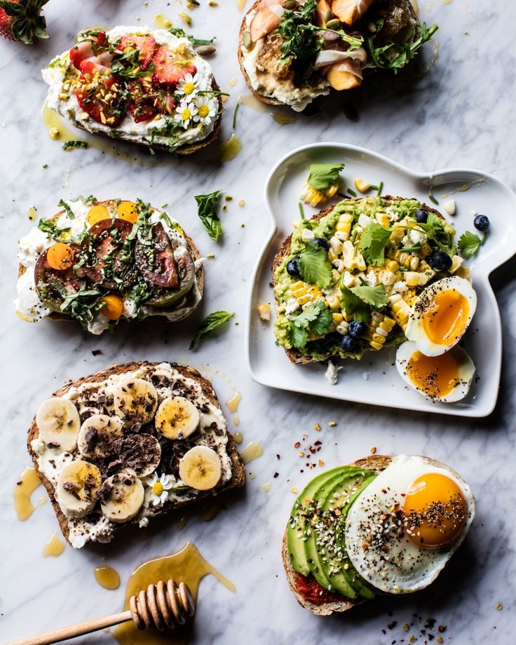
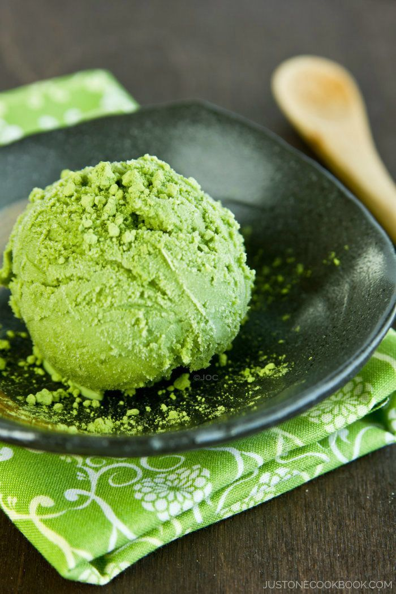

WELCOME !
Monthly Favorite!!!
Healthy Breakfast Toast!


Green Tea Ice Cream Recipe
1) mix 4 ½ teaspoons of green tea powder in 3 tablespoons of hot # water and let cool.
2) Then whip 1 cup of cold heavy cream until stiff. Heavy cream contains
3) more than 36% of milk fat and should be whipped to stiff without sugar.
4) Now mix green tea mixture with ½ cup of cold sweetened condensed milk.
5) And add in green tea and (sweetened) condensed milk mixture into
6) heavy cream and fold carefully until combined. Now transfer to a container
7) Sip and enjoy!!